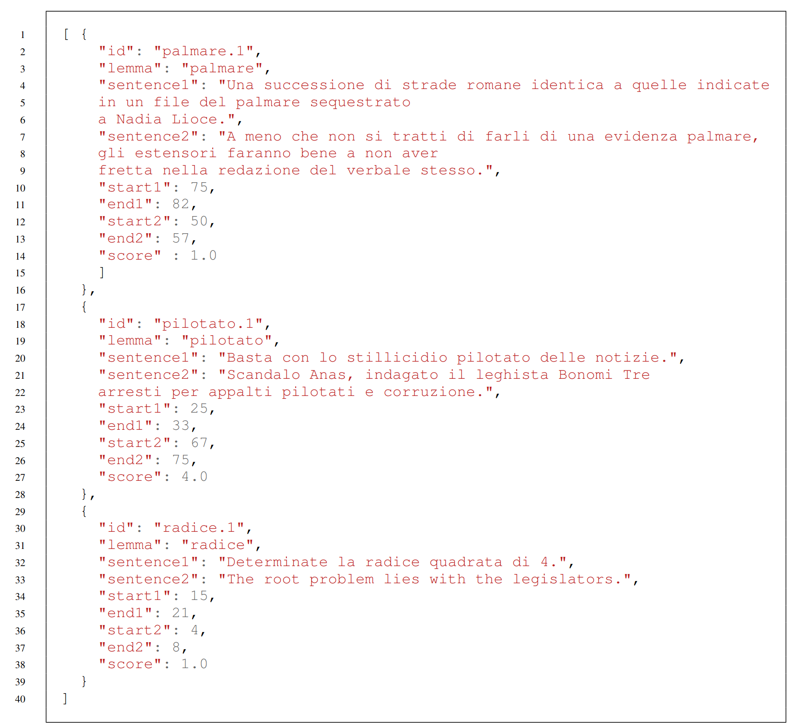

Welcome to WiC-ITA
WiC-ITA is the first Word-in-Context task for Italian, organized within
Evalita 2023, the 8th evaluation campaign of Natural Language Processing and Speech tools for Italian, which will be held in Parma (Italy) (7th-8th September 2023).
News
WiC-ITA (Word in Context for Italian) at EVALITA 2023 has been accepted: October 25th, 2023
Introduction
The WiC task requires determining if a word occurring in two different sentences has the same meaning or not.

Task Description
Guidelines
References
Contacts
If you have any question, contact us: